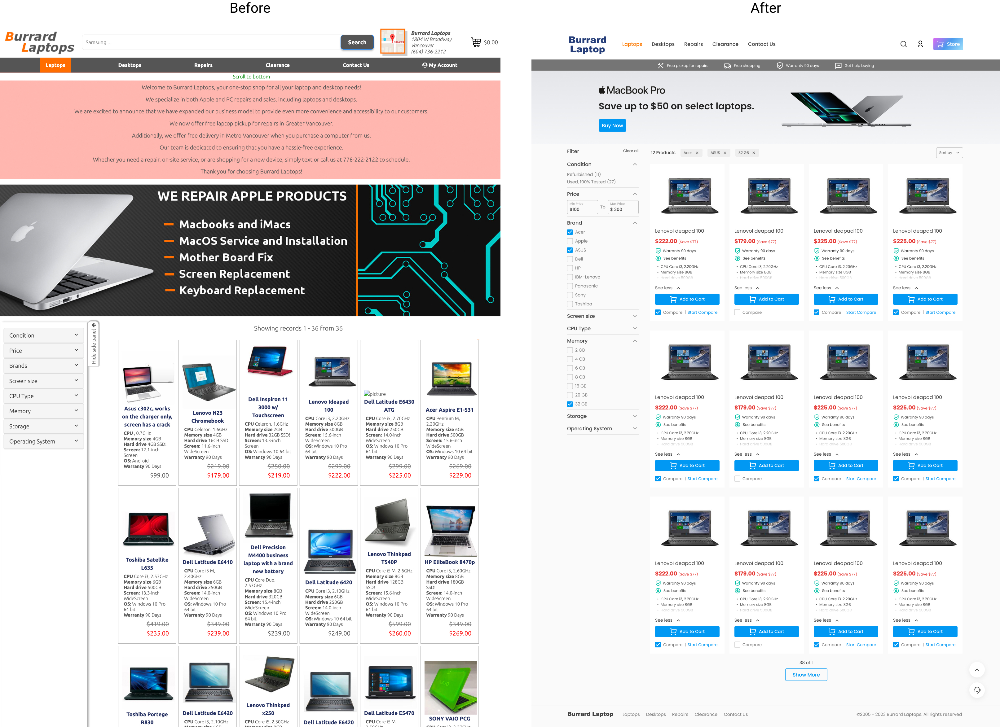
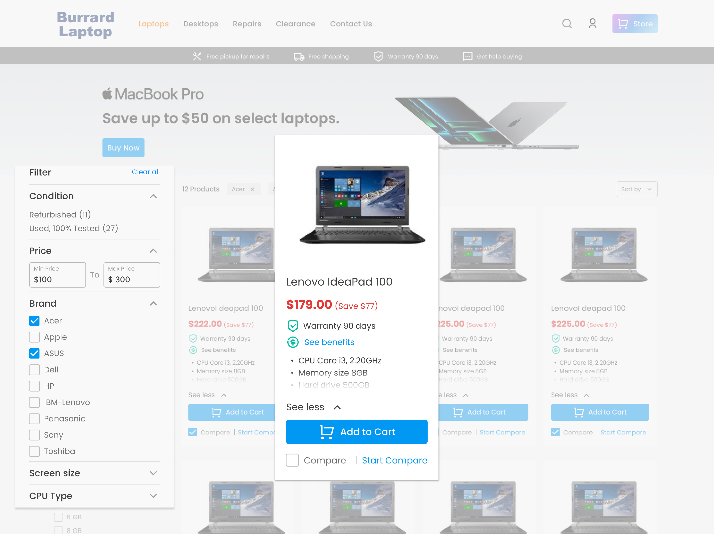
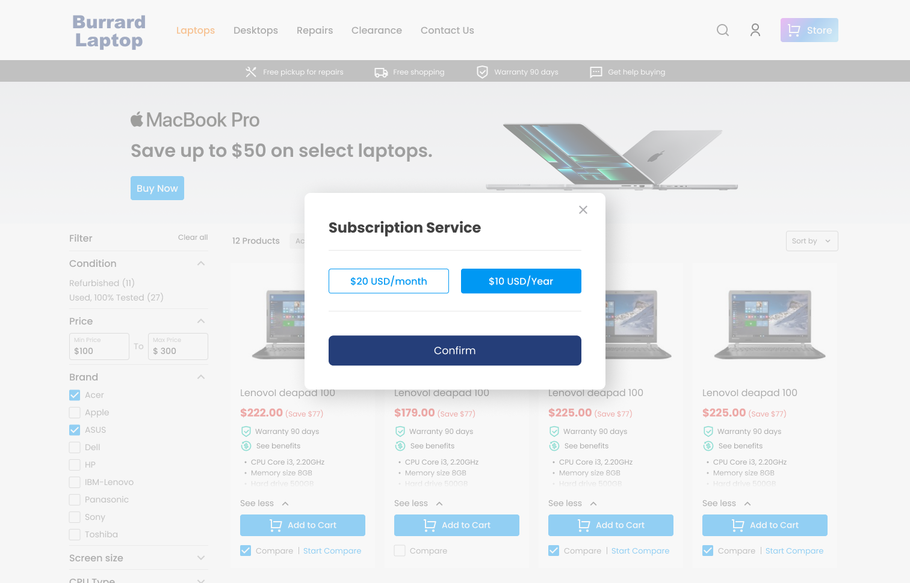
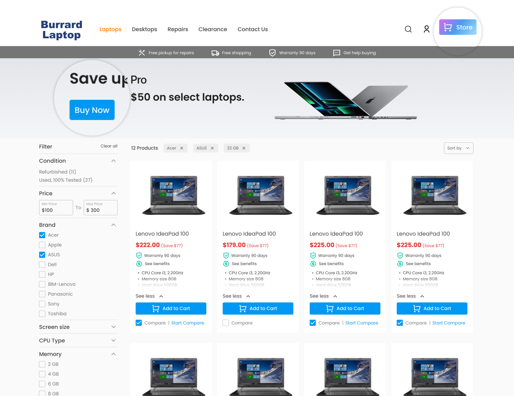
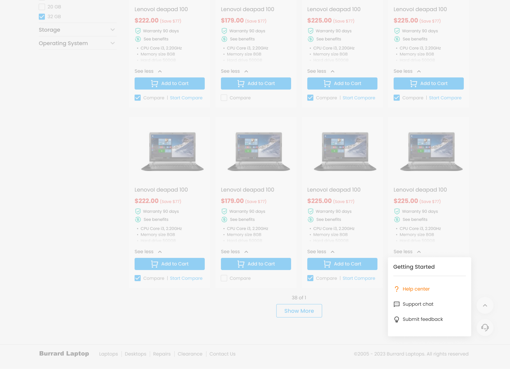
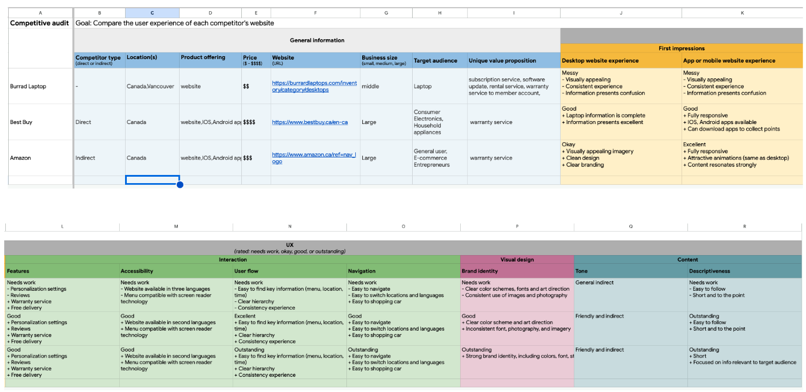
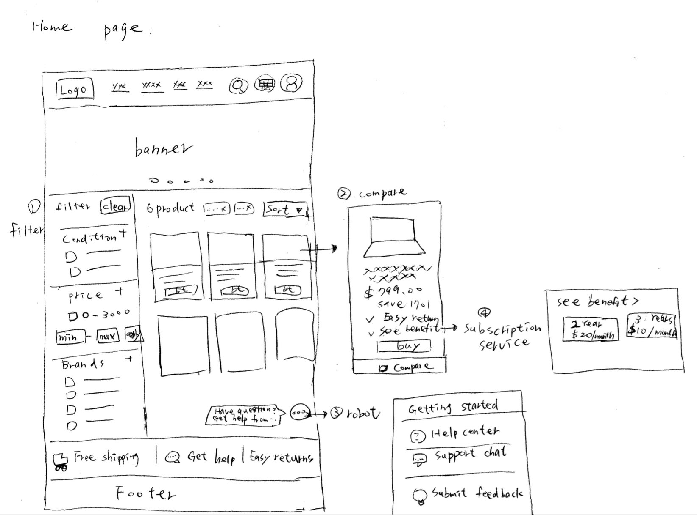
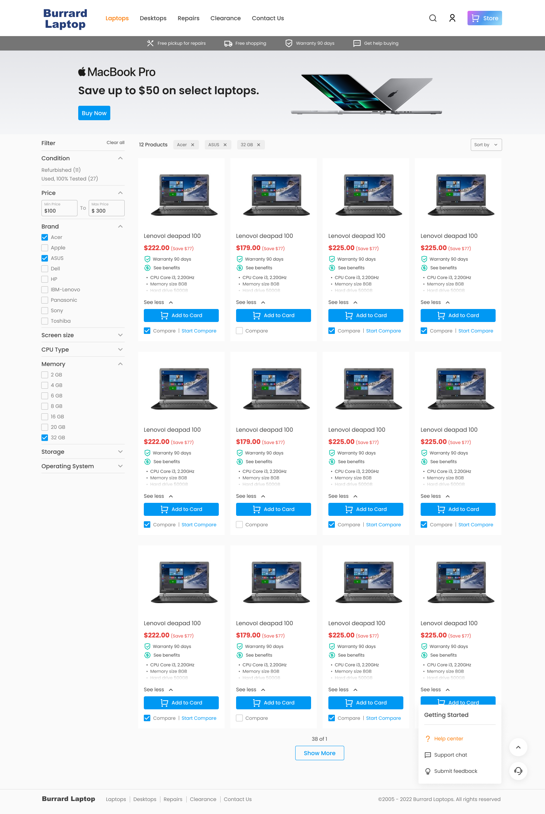
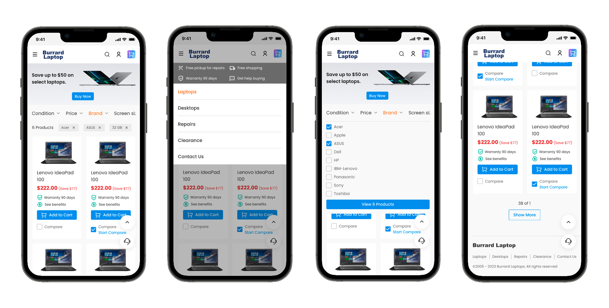
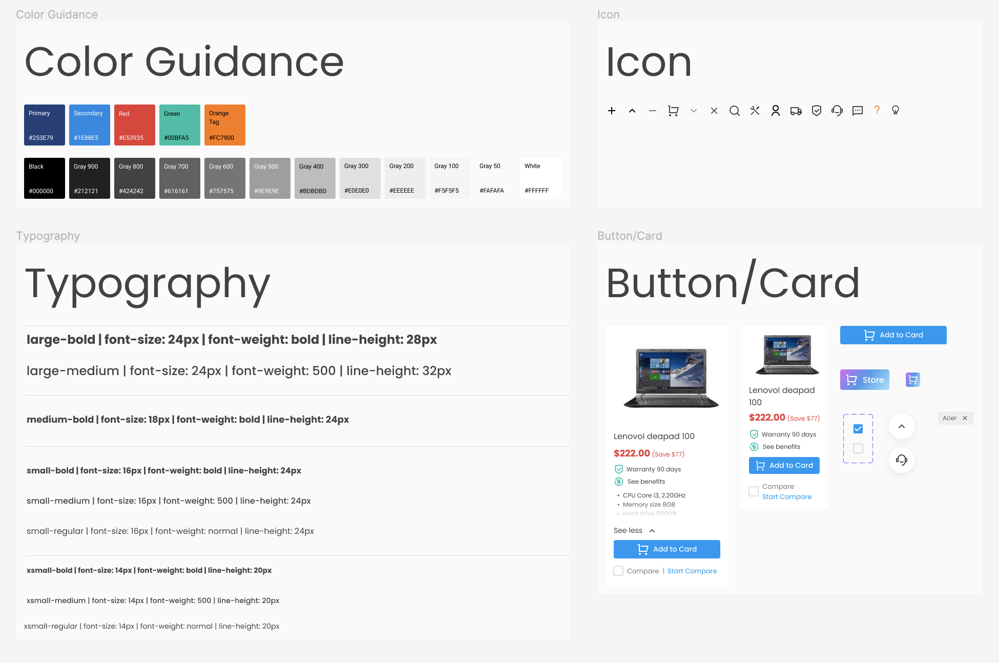

My Role
UX/UI product designer — a one week design challenge, completed independently from problem definition to high-fidelity prototype.
- Defining the problem and design goals, reframing the brief from "reading experience" to "buying confidence."
- Conducting a usability review of the live site and competitive analysis (Best Buy, Amazon).
- Determining information architecture, and focusing on the consumer shopping experience within a multi-service brief.
- Delivering sketches, wireframes, and high-fidelity interactive prototypes for both desktop and mobile.
- Building a UI system and implementing responsive design.
The Problem
Buying a used computer makes people anxious. What worries them isn't whether the page looks good. It's the machine's real condition, how long it will last, and what happens if it breaks. The original site answered none of this.
- No way to compare. One filter attribute at a time, and no comparison feature at all.
- No trust signals. Nothing on the card answered "is this safe to buy?"
- No information hierarchy. Price, specs, and condition competed for attention, with inconsistent spacing.
- A flow interrupted from the start. A wall of announcement text and a repair banner filled the first screen. No products in sight.
- No next step Cards had no way to add an item to the cart.

Goal
Redesign a chaotic browsing experience into a shopping flow where shoppers on a budget can easily compare, trust, and buy.
Scope focus (B2B2C)
- The brief spanned a B2B supplier, a vendor marketplace, and a full service suite.
- In one week, I focused on the consumer shopping experience, the layer closest to conversion.
- The platform runs on B2B, but the people buying are still consumers.
The Key Design
My redesign priorities for a smooth purchase:
A product card that is easy to compare and safe to trust
Multiple filters, side by side comparison, condition and a warranty of 90 days, all on the card.

Buy or rent, a second way in
A "See benefits" entry opens a subscription concept, renting instead of buying. It stays at concept level; the full flow is a next step.

A clearer banner and call to action button
Simplified navigation, recognizable icons and clear CTAs, and a rebuilt banner that leads straight to the products.

Contact us
Help center, Support chat, and Submit feedback, with escalation to a real person. It cuts the time to an answer.

Process
User Research
Surface condition and warranty on the card, smooth out filtering and comparison, and bring the rental service into the flow.

User Persona
User Insights
The barrier isn't price, it's uncertainty. Comparison and trust signals reduce it.
Opportunity
Surface condition and warranty on the card, smooth out filtering and comparison, and bring the rental service into the flow.
Ideation
-
Sketch

I mapped the homepage structure on paper, with filters on the left, products as cards, comparison, a robot chat, and the subscription entry. This confirmed the overall architecture before moving to high fidelity.
-
Solutions
I redesigned the overall color system, Logo, banner configuration, and the visual establishment started with a professional brand image.
-
Desktop:

-
Mobile:

Responsive design for different device
UI Kit
Define fonts, colours, and components in assets.

Prototype
Takeaways
The most useful lesson was separating the symptom from the problem. The brief pointed at reading experience, but the deeper issue was buying confidence. Solving that meant designing for comparison, trust, and risk, not just a cleaner layout. I also learned that connecting a real business opportunity, the existing rental service, with a real user need, a lower barrier to entry, is where design creates value for the business.
Online Teaching
4Gamers gaming platforms